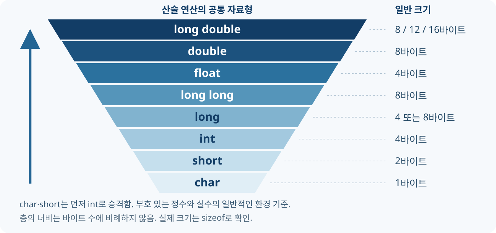
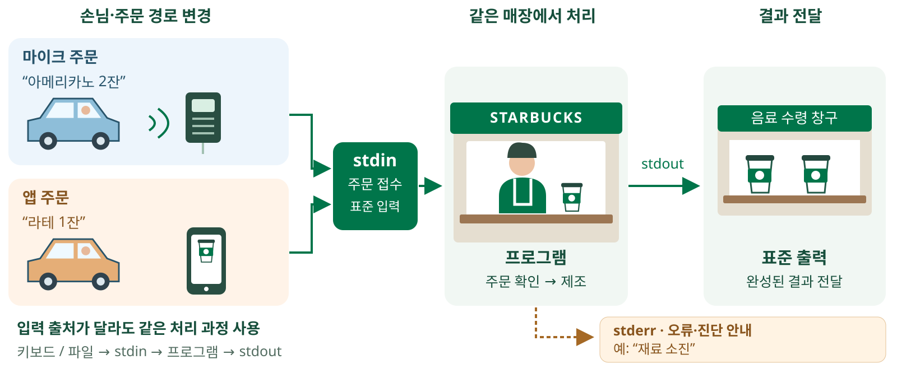
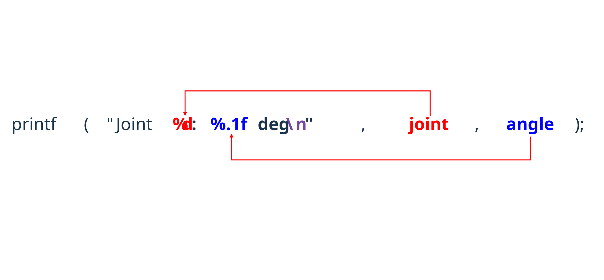
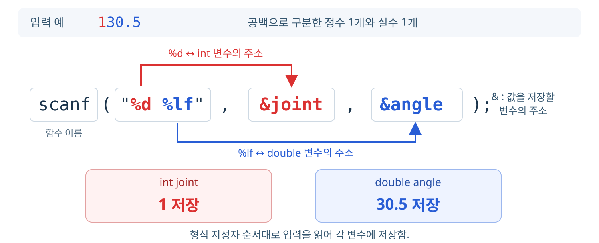

01. 표준 입출력
프로그램과 사용자 사이의 데이터 흐름
| 구분 | 접미사 | 예시 | 숫자 상수의 자료형 |
|---|---|---|---|
| 정수 | 없음 | 7 |
int |
| 정수 | u 또는 U |
7u |
unsigned int |
| 정수 | l 또는 L |
7L |
long |
| 정수 | ll 또는 LL |
7LL |
long long |
| 정수 | UL |
7UL |
unsigned long |
| 정수 | ULL |
7ULL |
unsigned long long |
| 실수 | 없음 | 7.0 |
double |
| 실수 | f 또는 F |
7.0f |
float |
| 실수 | l 또는 L |
7.0L |
long double |
u는 부호 없는 정수, f는 실수 상수에 사용함. 7f 대신 7.0f로 표기함.int deg = 30 / 180;
30과 180이 모두 int이므로 정수 나눗셈 수행.0을 deg에 저장함.int deg = 30 / 180.0;
180.0은 double. 30도 double로 변환하여 실수 나눗셈 수행.0.166667이며 자료형은 double.int deg에 저장할 때 소수 부분을 제거하므로 최종 저장 값은 0.float deg = 30 / 180.0;
30을 double로 변환하여 실수 나눗셈 수행. 계산 결과는 약 0.166667.float로 변환하여 deg에 저장함. 소수 부분 유지, 저장 정밀도는 float 기준.printf("%f", deg);로 출력하면 0.166667 표시.float deg = 30 / 180;
30은 int, 180은 int.0으로 계산됨.float로 변환하여 deg에 저장함.double a = 30 / 180.0;
| 단계 | 계산 과정 |
|---|---|
| 1 | 180.0의 자료형은 double |
| 2 | 30을 double로 자동 변환 |
| 3 | 실수 나눗셈 결과를 a에 저장 |
결과: 약
0.166667·double
(자료형)으로 변환할 자료형을 직접 지정함.double a = (double)30 / 180;
| 단계 | 계산 과정 |
|---|---|
| 1 | (double)30으로 직접 변환 |
| 2 | 180도 double로 자동 변환 |
| 3 | 실수 나눗셈 결과를 a에 저장 |
결과: 약
0.166667·double

char·short는 먼저int로 승격. 이후 서로 다른 자료형은 그림의 위쪽 자료형으로 맞추어 계산함.
| 산술 연산의 피연산자 조합 | 공통 계산 자료형 | 예시 |
|---|---|---|
int와 float |
float |
3 + 0.5f → 3.5f |
int와 double |
double |
3 + 0.5 → 3.5 |
float와 double |
double |
3.0f + 0.5 → 3.5 |
float와 double의 계산에서는 정밀도가 높은 double로 맞춤.int count = 3.5; // 3 저장: 소수 부분 제거
float value = 3.5; // double에서 float로 변환하여 저장
계산은 공통 자료형 기준, 저장은 변수 자료형 기준. 자동 변환이 항상 데이터 손실을 막아 주는 것은 아님.
실행 결과가 여기에 표시됩니다.
프로그램과 사용자 사이의 데이터 흐름

손님과 주문 경로가 달라져도 같은 매장에서 처리. 프로그램도 입력 출처가 달라져도 같은 처리 과정 사용 가능.
| 스트림 | 역할 | 대표 함수·호출 형태 |
|---|---|---|
stdin |
표준 입력 | scanf, getcharfscanf(stdin, ...), fgets(buf, size, stdin), fgetc(stdin) |
stdout |
일반 결과 출력 | printf, putchar, putsfprintf(stdout, ...), fputs(text, stdout) |
stderr |
오류·진단 메시지 출력 | perrorfprintf(stderr, ...), fputs(text, stderr), fputc(ch, stderr) |
stdin으로 전달됨. 출력 칸에는 결과·오류가 함께 표시될 수 있음.fscanf·fprintf 등은 인수로 스트림을 지정함. 이번 실습은 scanf·printf 중심, 나머지는 참고용.형식 문자열로 값의 표시 방법 지정

int joint = 1;
double angle = 30.5;
printf("Joint %d: %.1f deg\n", joint, angle);
Joint 1: 30.5 deg
| 구성 요소 | 역할 |
|---|---|
"Joint %d: %.1f deg\n" |
형식 문자열 |
%d |
첫 번째 값 joint 표시 |
%.1f |
두 번째 값 angle을 소수 1자리로 표시 |
\n |
줄바꿈 |
| 지정자 | 전달할 값 | 예 |
|---|---|---|
%d |
int |
printf("%d", -10); |
%u |
unsigned int |
printf("%u", 10u); |
%f |
double 또는 전달 시 변환된 float |
printf("%.2f", 1.25); |
%c |
문자 코드 | printf("%c", 'A'); |
%s |
널 문자로 끝나는 문자열 | printf("%s", "Robot"); |
%x |
unsigned int를 16진수로 표시 |
printf("%x", 255u); → ff |
printf("%d", 3.5);처럼 자료형이 다른 값 전달 금지."Robot"은 문자열. 문자열 저장 방식은 뒤에서 설명.실행 결과가 여기에 표시됩니다.
실행 결과가 여기에 표시됩니다.
실행 결과가 여기에 표시됩니다.
| 표기 | 의미 | 코드 예 |
|---|---|---|
\n |
줄바꿈 | printf("A\nB\n"); |
\t |
다음 탭 위치로 이동 | printf("A\tB\n"); |
\\ |
역슬래시 하나 | printf("C:\\data\\robot.csv\n"); |
\" |
큰따옴표 하나 | printf("\"Robot\"\n"); |
\t의 이동 폭은 현재 위치에 따라 달라짐. 표 정렬에는 출력 폭 지정이 편리함.%%는 이스케이프 문자가 아니라 printf 형식 문자열의 % 출력 문법.실행 결과가 여기에 표시됩니다.
| 지정자 | 표시 방식 | 0.00001234의 출력 |
|---|---|---|
%.8f |
소수점 아래 8자리 | 0.00001234 |
%.3e |
지수 표기, 소수점 아래 3자리 | 1.234e-05 |
%.4g |
유효숫자 4자리, 크기에 따라 소수·지수 표기 선택 | 1.234e-05 |
%e의 e-05: 10⁻⁵를 곱한다는 뜻. 작은 센서값·큰 측정값 표시에 활용.%g의 정밀도는 소수 자릿수가 아닌 유효숫자 수. 불필요한 뒤쪽 0은 생략함.실행 결과가 여기에 표시됩니다.
| 형식 | 의미 | 활용 |
|---|---|---|
%8.2f |
최소 폭 8칸, 소수 2자리 | 좌표를 오른쪽 정렬 |
%-8.2f |
최소 폭 8칸, 왼쪽 정렬 | 표의 열 정렬 |
%+.2f |
양수에도 + 표시 |
+30.00, -30.00 |
%04d |
최소 폭 4칸, 빈 앞자리를 0으로 채움 | 7 → 0007 |
%02X |
대문자 16진수, 최소 폭 2칸 | 10u → 0A |
%% |
퍼센트 기호 하나 출력 | 배터리 잔량 표시 |
실행 결과가 여기에 표시됩니다.
입력 문자열을 값으로 해석하여 변수에 저장

printf는 변수의 값 전달, scanf는 값을 저장할 변수의 주소 전달.
double입력은%lf사용.
int motor = 0;
int matched = scanf("%d", &motor);
입력 예: 20
| 구성 요소 | 역할 |
|---|---|
%d |
정수 형식으로 읽기 |
&motor |
읽은 값을 저장할 변수의 주소 |
반환값 matched |
성공적으로 값을 대입한 항목 수 |
motor에 20, matched에 1 저장.abc 입력 시 변환 실패. 반환값 0, motor에는 새 값이 저장되지 않음.| 표현 | 전달하는 것 | 예 |
|---|---|---|
motor |
변수에 저장된 값 | printf("%d", motor); |
&motor |
값을 저장할 변수의 주소 | scanf("%d", &motor); |
scanf가 호출한 쪽의 변수를 변경하려면 저장 위치가 필요함.scanf("%d", motor);는 정수 변수의 주소 전달 방식이 아님.&는 여기서 주소를 구하는 단항 연산자. a & b의 비트 AND와 구분.| 변수 자료형 | printf 출력 | scanf 입력 |
|---|---|---|
int n |
printf("%d", n); |
scanf("%d", &n); |
unsigned int n |
printf("%u", n); |
scanf("%u", &n); |
float f |
printf("%f", f); |
scanf("%f", &f); |
double d |
printf("%f", d); |
scanf("%lf", &d); |
char c |
printf("%c", c); |
scanf(" %c", &c); |
%lf, 출력은 %f 사용.scanf의 " %c"는 문자 앞의 공백·개행을 건너뜀.scanf에는 %.2f처럼 소수 자릿수를 지정하지 않음.실행 결과가 여기에 표시됩니다.
실행 결과가 여기에 표시됩니다.
실행 결과가 여기에 표시됩니다.
문자, 문자열, 16진수, 여러 자료형
| 대상 | 저장 공간 | 입력 형식 | 출력 형식 |
|---|---|---|---|
| 모드 한 글자 | char mode = ' '; |
scanf(" %c", &mode); |
%c |
| 공백 없는 이름 | char name[16] = ""; |
scanf("%15s", name); |
%s |
" %c": 앞의 공백·개행을 건너뛰고 문자 하나 읽기. "%c"는 공백도 읽음.char name[16]: 16바이트 저장 공간. %15s는 최대 15바이트를 읽고 끝 표시 \0 추가.&name이 아닌 name 사용.%s는 공백에서 읽기 종료.실행 결과가 여기에 표시됩니다.
| 10진수 | 2진수 · 4비트 | 16진수 | 10진수 | 2진수 · 4비트 | 16진수 |
|---|---|---|---|---|---|
| 0 | 0000 |
0 |
8 | 1000 |
8 |
| 1 | 0001 |
1 |
9 | 1001 |
9 |
| 2 | 0010 |
2 |
10 | 1010 |
A |
| 3 | 0011 |
3 |
11 | 1011 |
B |
| 4 | 0100 |
4 |
12 | 1100 |
C |
| 5 | 0101 |
5 |
13 | 1101 |
D |
| 6 | 0110 |
6 |
14 | 1110 |
E |
| 7 | 0111 |
7 |
15 | 1111 |
F |
0~9, A~F 사용. A~F는 10진수의 10~15에 대응.0010 1010₂ → 2A₁₆ → 2 × 16 + 10 = 42₁₀.0x2A로 표기. 같은 정수 값을 %u로 출력하면 42, %X로 출력하면 2A (unsigned int 기준).| 항목 | 코드 또는 입력 | 의미 |
|---|---|---|
| 저장 변수 | unsigned int value = 0; |
부호 없는 정수 값 저장 |
| 16진수 입력 | scanf("%x", &value); |
입력 문자열을 16진수로 해석 |
| 입력 예 | 2A, 2a, 0x2A |
모두 10진수 42에 해당 |
| 10진수 출력 | printf("%u", value); |
42 출력 |
| 16진수 출력 | printf("%02X", value); |
대문자 16진수, 최소 2자리 출력 |
| 2진수 출력 | (value >> n) & 1u |
n번째 비트를 꺼내 0 또는 1 출력 |
%x로 10을 읽으면 10진수 16. 입력 지정자에 따라 해석하는 진법이 달라짐.00~FF 입력을 사용하여 하위 8비트를 출력함.실행 결과가 여기에 표시됩니다.
| 입력 예 | scanf 형식 | 의미 |
|---|---|---|
7 30.5 A |
"%d %lf %c" |
정수, 실수, 문자 순서 |
0.25,1.50 |
"%lf,%lf" |
쉼표로 구분한 두 좌표 |
0.25 , 1.50 |
"%lf , %lf" |
쉼표 앞뒤 공백도 허용 |
%로 시작하지 않는 쉼표 등은 입력에도 같은 기호가 있어야 함.scanf의 %f·%lf는 1.2e-3 같은 지수 표기도 입력 가능.\n을 넣지 않음. 터미널에서는 다음 입력을 기다릴 수 있음.실행 결과가 여기에 표시됩니다.
0°: 오른쪽(+x), 90°: 위쪽, -90°: 아래쪽. 기본값 0°에서 놓으면 중력으로 낙하. 입력 범위 -180~180° · 반시계 방향이 양수.
| 핵심 개념 | 기억할 내용 | 예시 |
|---|---|---|
| 형 변환 | 계산 자료형과 저장 자료형을 구분 | float x = 3 / 2; → 1.0f |
| 표준 입출력 | stdin으로 입력, stdout으로 출력 |
scanf, printf |
| 값과 주소 | 출력은 값, 숫자·문자 입력은 변수 주소 전달 | printf("%d", n); / scanf("%d", &n); |
| 실수 지정자 | double 입력은 %lf, 출력은 %f |
scanf("%lf", &x); |
| 출력 모양 | 소수 자릿수·폭·부호·지수 표기 조정 | %.2f, %+8.2f, %04d, %.3e, %.4g |
| 문자와 진법 | 지정자에 따라 읽고 표시하는 방식 선택 | %c 문자, %s 문자열, %x 16진수 |